Interactive and Evolving Art Installation
Eve Fitzsimons, an artist at NCAD, has her ceramics studio desk right next to a window that faces onto the main thoroughfare of the campus, a busy walkway that hundreds of people pass through every day. It's the kind of space people move through without really stopping, a liminal, trasnitional space. I wanted to change that.
E.V.E started as an excuse to do something fun with that window. Eve found an old CRT TV and a monitor, and I got to work figuring out how to make something worth stopping for.
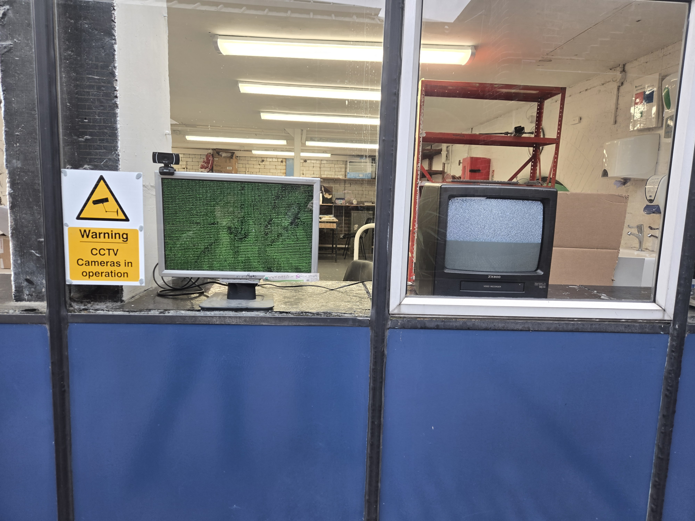
The first thing I got working was ASCII rendering. The webcam feed converted to characters in real time and displayed on the monitor. People walking past could see themselves rendered in text, which was enough to make them stop and look.
It's a novel way of seeing yourself in a different way, and people walking by had many varying reactions.
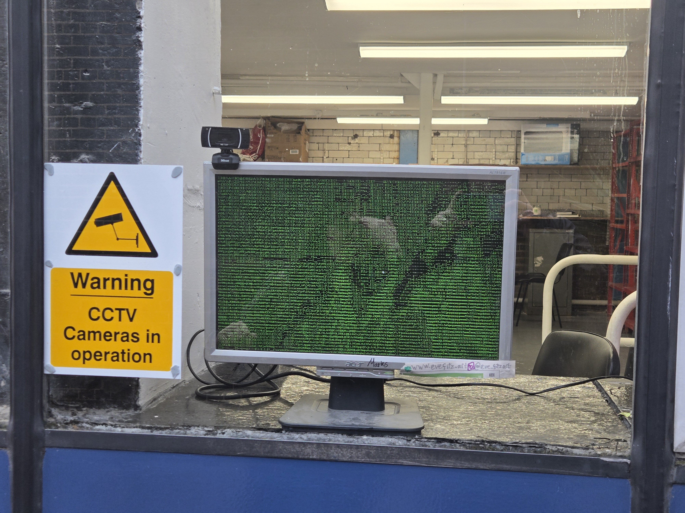
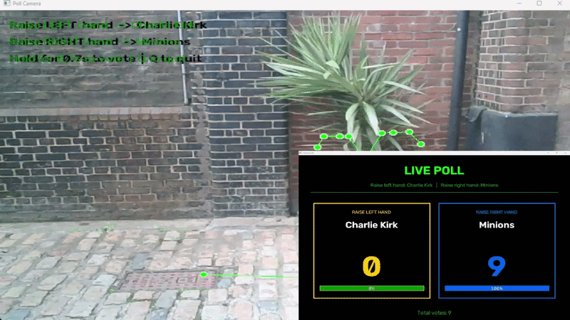
In order to add a more interactive element, both screens were incoporated, allowing passersby to vote in a pole by moving their arms.
Once motion tracking was working I wanted to give people a way to actually do something, to not just be seen, but participate. So I added a voting mechanic: raise your left hand to vote for one option, raise your right for the other.
The results display on the flat monitor for everyone passing to see. It turns a walk-through into a tiny public opinion poll.
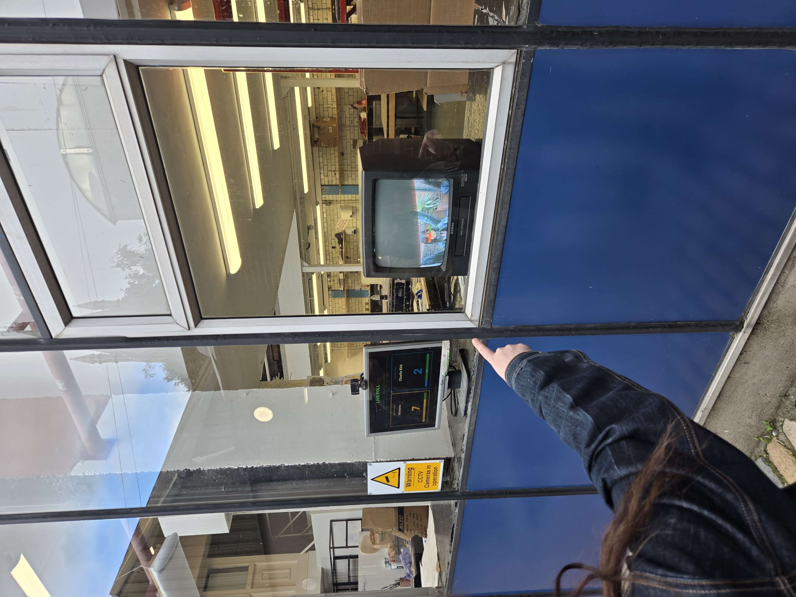

The poll updates live on the monitor as votes are cast, visible from outside through the glass.
The setup came together in stages. First just getting the ASCII render working, then adding pose detection, then wiring up the voting logic and the live poll display. The CRT and monitor sitting side by side in the window provided a good split, allowing people to see themselves through the retro, nostalgic look of the CRT, and get a clear read on the results of the poll on the monitor.
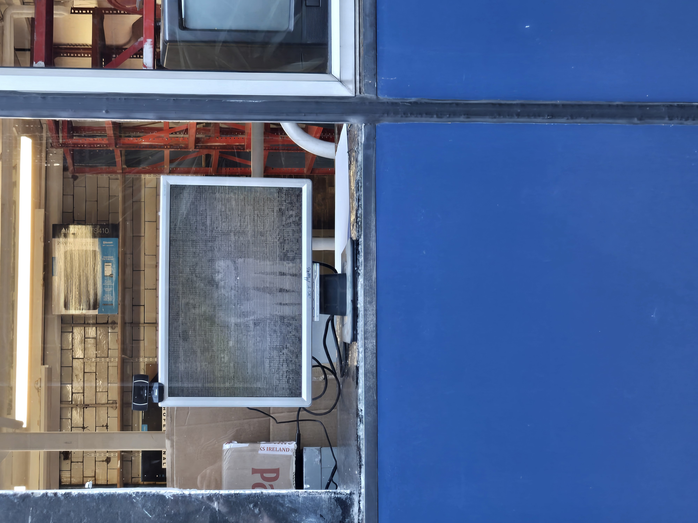
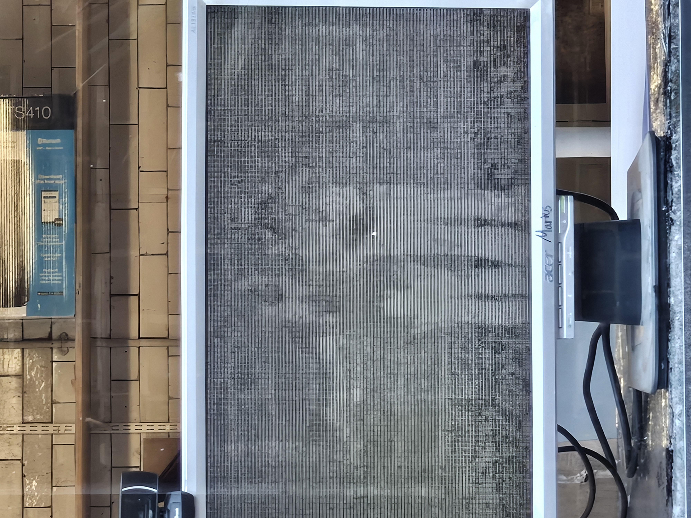
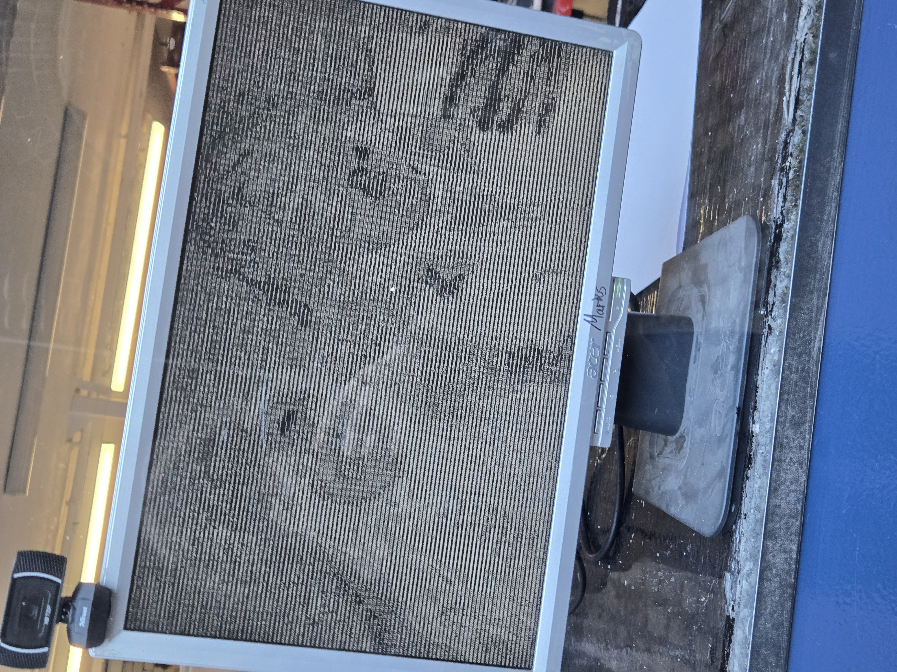
Setting up the installation, ASCII display of webcam feed.
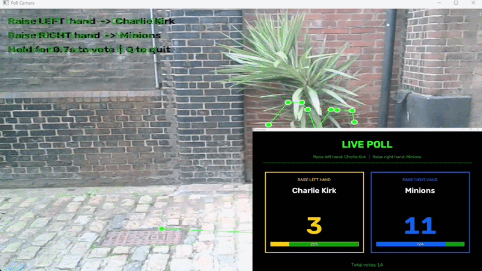
The walkway ins NCAD is one of those spaces people are always moving through but rarely stop in. What I liked about E.V.E was watching that change. People would catch a glimpse of themselves on the CRT or notice the ASCII monitor and just slow down. Some figured out the voting immediately, others needed a second. A few came back to vote again.
The reactions were the best part. People pulling faces at themselves in the CRT, leaning in close to find their features in the ASCII, nudging whoever they were walking with to come and look. A few took selfies in the screens. Some held their hand up tentatively, waited for the vote to register, then grinned when the number ticked up. There's something about watching someone interact with a thing you made, especially when they didn't expect it to be there, even moreso when it makes them smile.
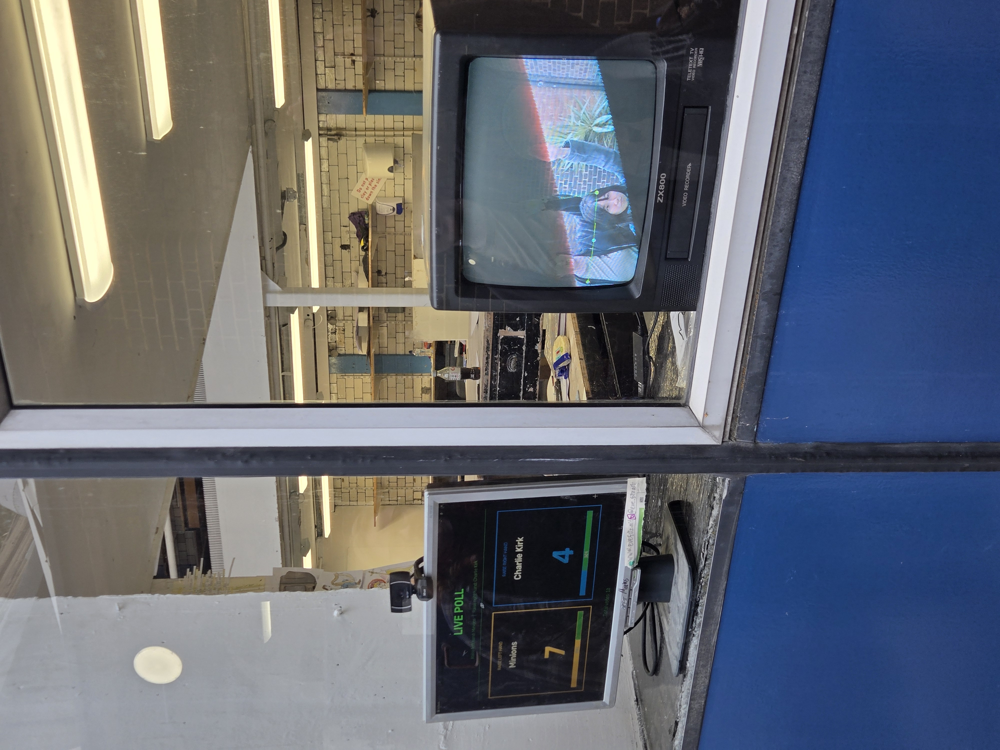
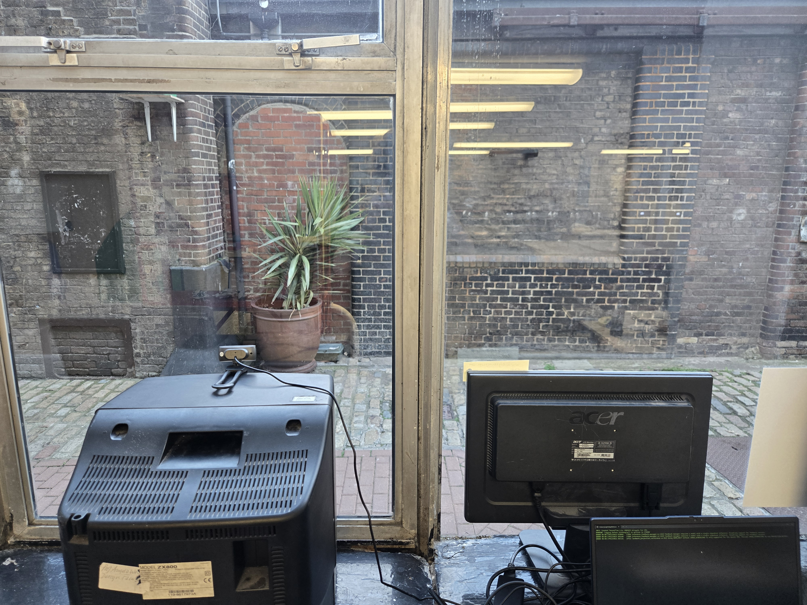
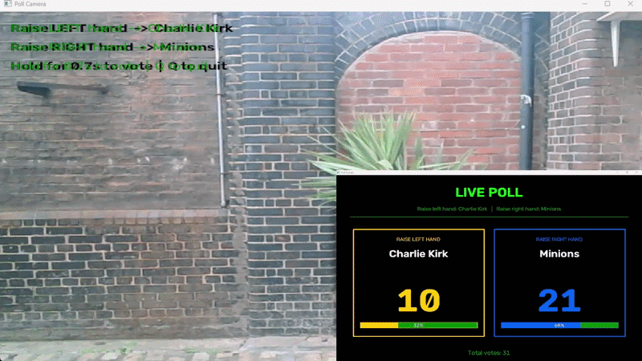
The system detects a raised hand and locks in a vote.
E.V.E is built in Python. To make it easy for me or Eve to actually run and change things without touching code, I built a simple terminal UI that controls the whole system. You can switch any screen between modes, ASCII cam, wireframe skeleton overlay, or the live poll.
It auto-detects however many screens and cameras are connected, so scaling up is straightforward. The poll choices can be swapped out in seconds.
For those interested the source code can be found on my GitHub.
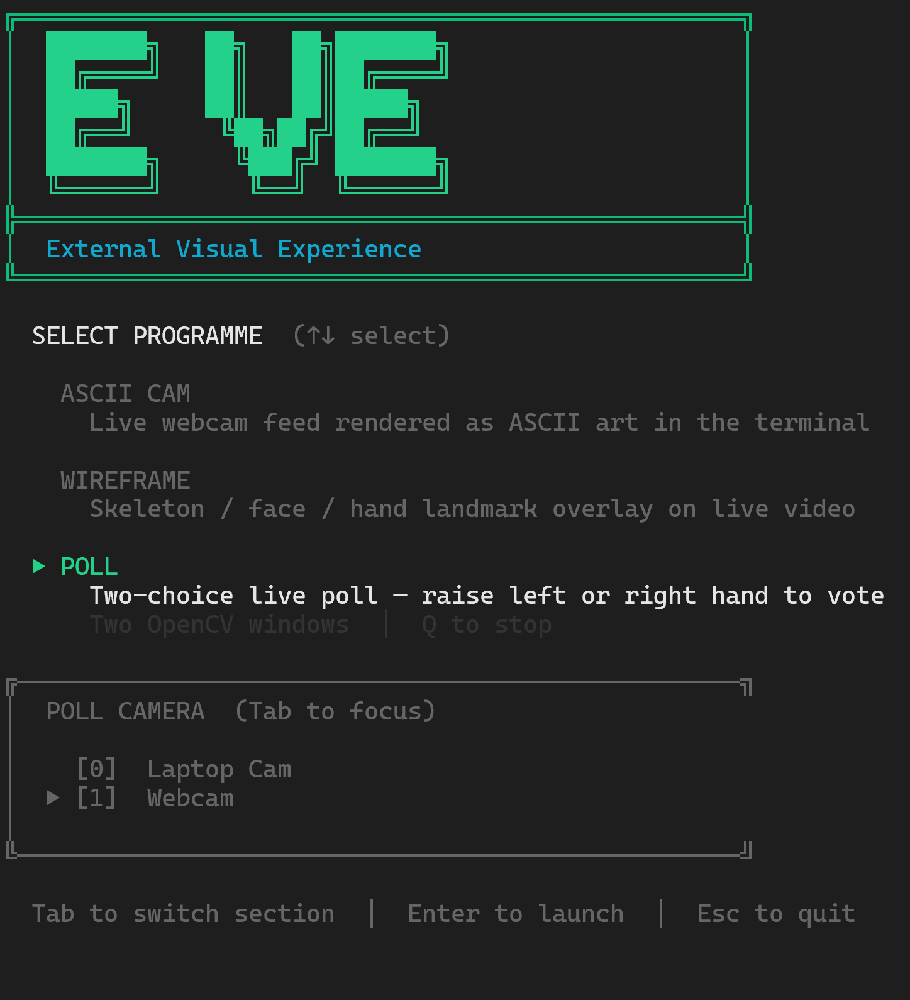
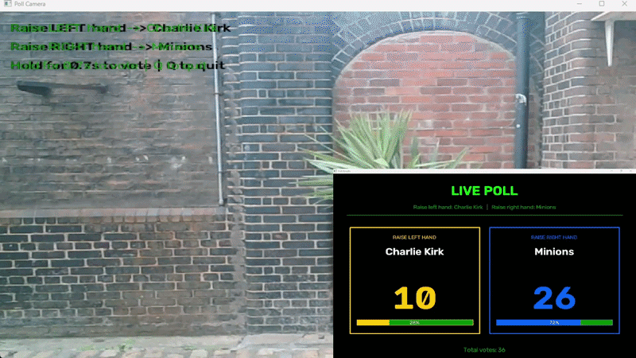
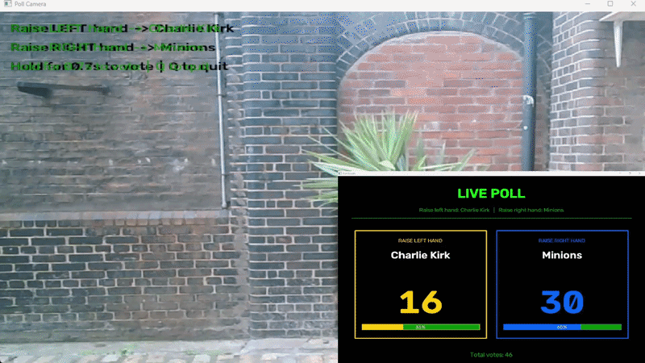
Votes cast. Results shown.
At its core E.V.E is just a fun use of a space that was already there. I just added screens and a webcam, and allowed people interact with it how they please.
The objective was to get people to stop and appreciate a moment of their journey, not to just focus on the destination. E.V.E allows people to stop and reflect, literally seeing their own reflection in a new and fun way.
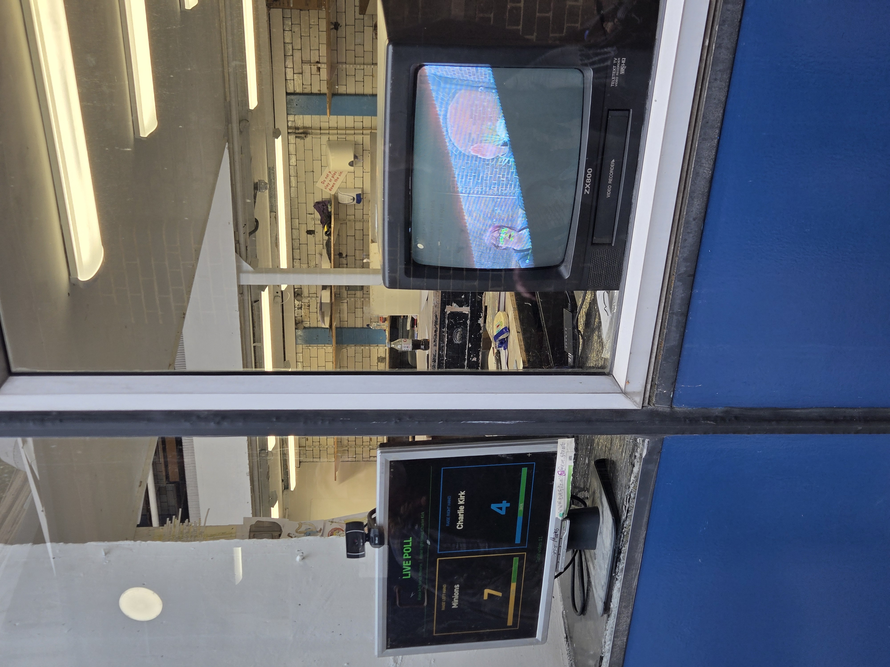
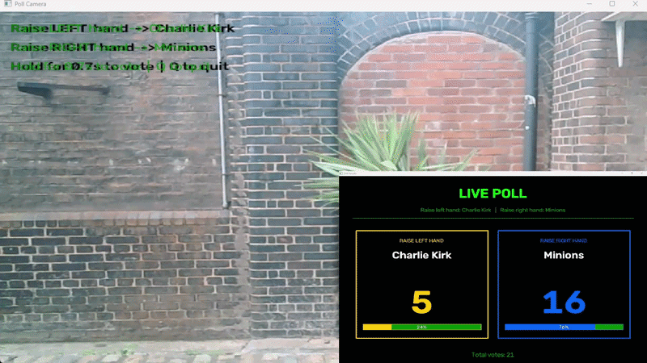
I will continue to update E.V.E and expand it, adding more ways for people to interact.